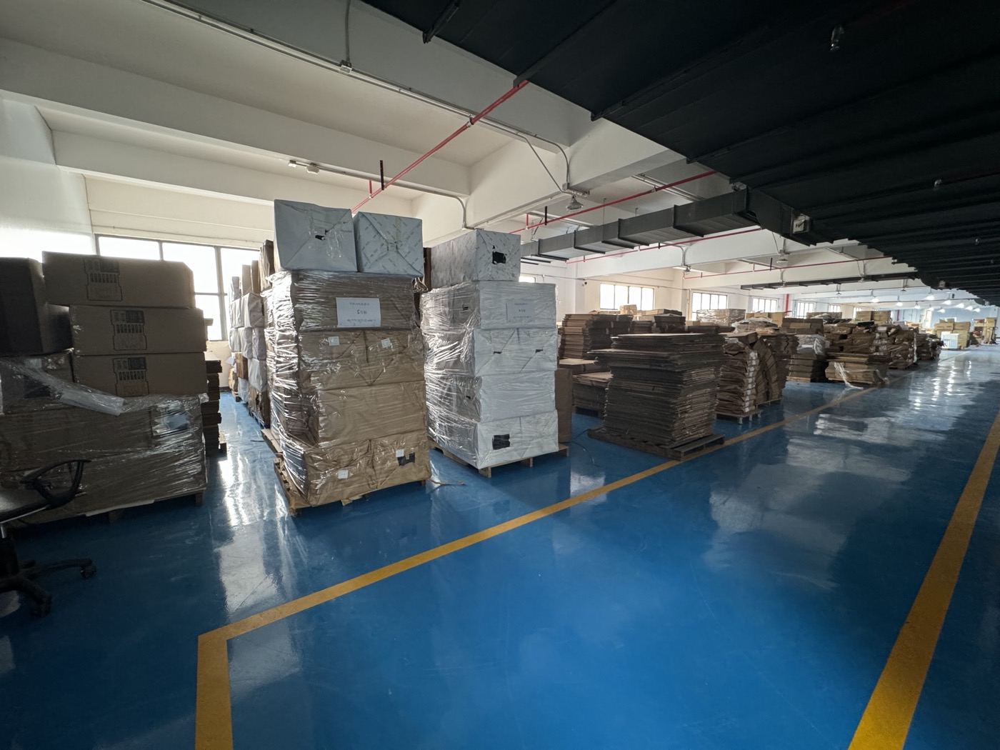
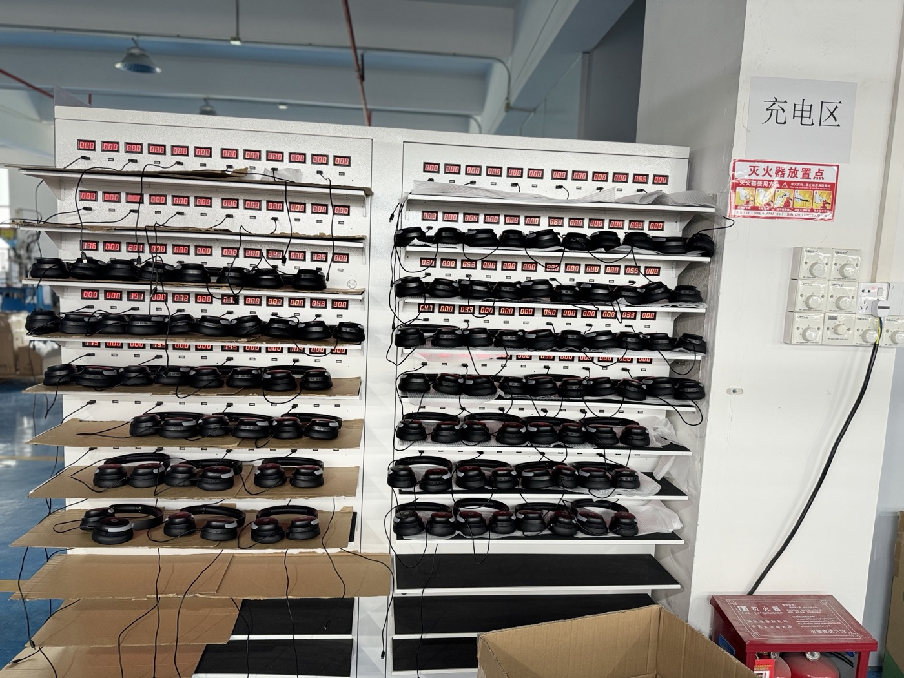
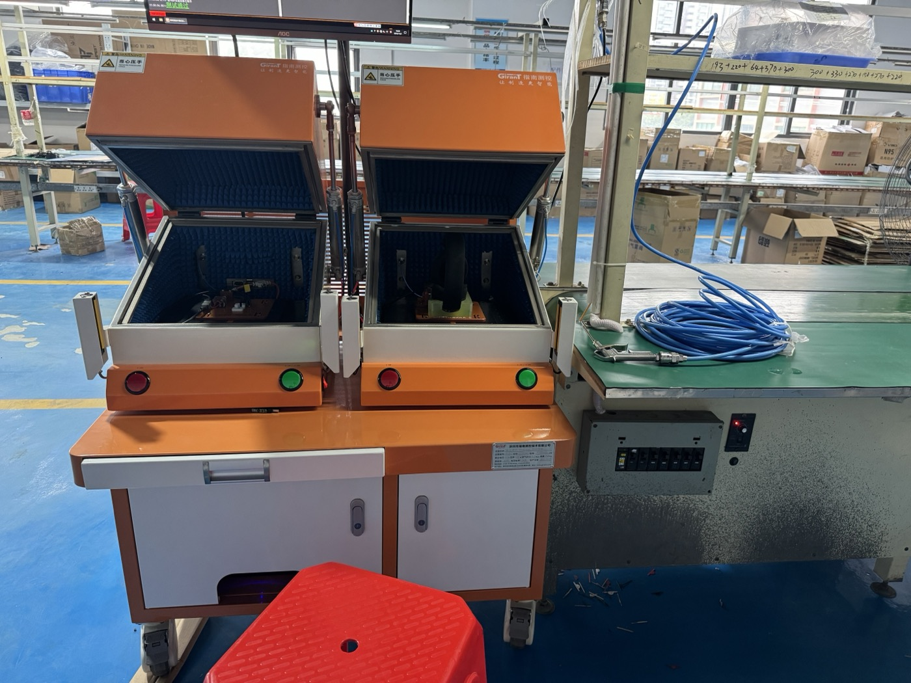
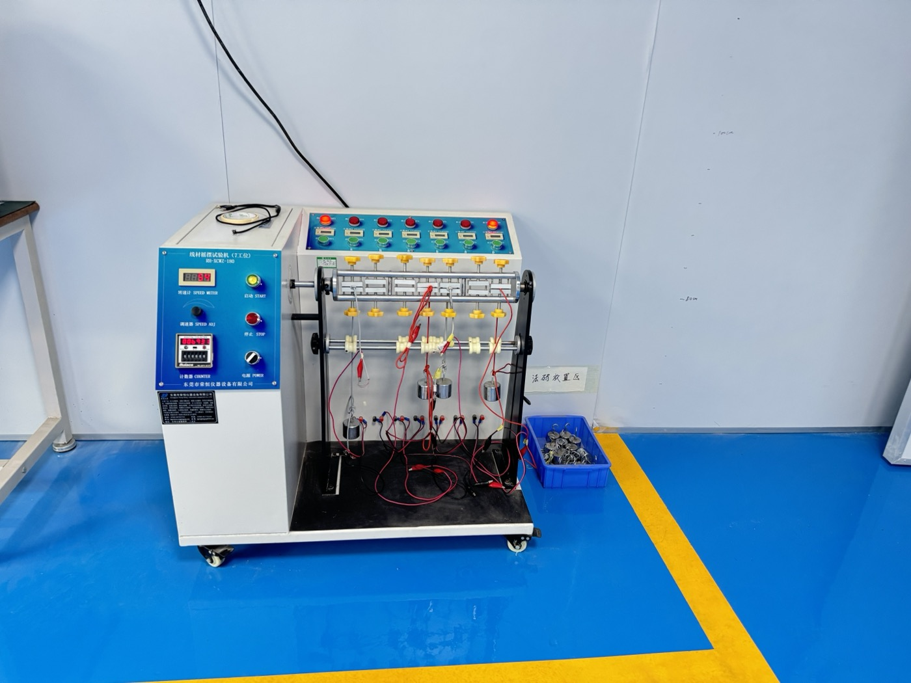
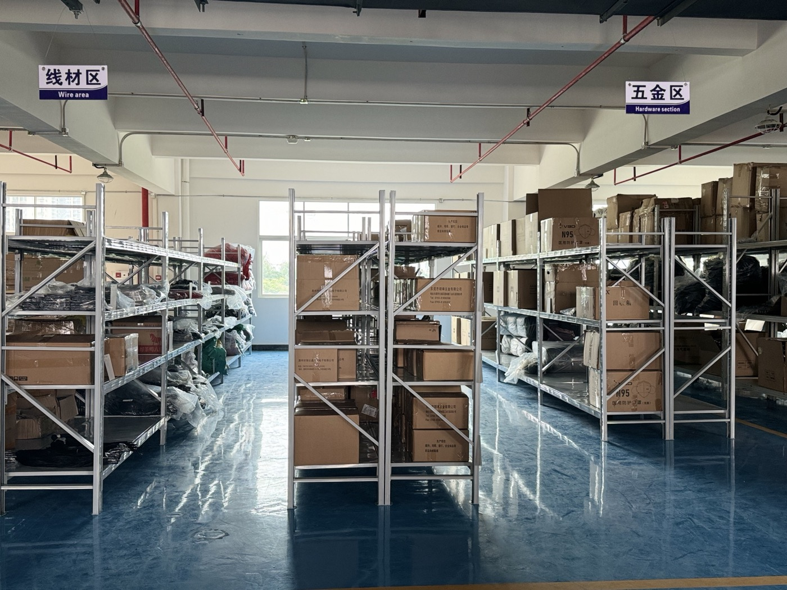

1. Packaging material
Ask how cartons, inserts, manuals and accessory bags should be prepared for your selected model, channel and destination market.

Gaming headset sample process
The sample sounds right. Is it the version you are about to order? Follow six review steps to keep the headset, receiver, changes and packing files together, from the first inquiry to a written approval record.

Keep the roles separate
Agree what the sample is meant to settle before asking it to represent the finished order. The required sample stages and commercial terms depend on the project.
Six review steps
Use this as a review sequence, not a promised production timetable. Agree the sample scope, charges, responsibilities and timing for your selected project.
| Step | What to settle | Record before moving on |
|---|---|---|
| 1. Send the brief | Target devices, connection modes, country, channel and the functions you want to evaluate. | A focused shortlist and the questions each sample should answer. |
| 2. Confirm the sample scope | Exact version, included parts, availability, sample and shipping charges, and any branding work. | The agreed sample configuration, quotation scope and preparation versus delivery timing. |
| 3. Review the received sample | Model identity, playback and microphone together, fit, controls and accessories on the intended devices. | Photos and observations with the device, app, connection mode and sample version. |
| 4. Resolve changes | Which issues need another check, a revised part, updated artwork or a different sample. | A change list with the affected version, responsible party and agreed next review. |
| 5. Match the pack | Receiver, adapter, cables, microphone, box images, manual language and branding files. | The packing list and artwork revision that match the agreed headset version. |
| 6. Record approval | Which sample and files are accepted, and whether any unresolved item prevents approval. | A written reference for the order scope and any checks to reconfirm before a bulk-order commitment. |
For the physical checks in step 3, use the blank sample evaluation worksheet. For step 5, use the packing checklist. These tools are blank review aids, not completed approvals.
Process references
Use the supplied images to ask which process applies to your sample. The photos are not a model-specific test record or evidence that an order has passed inspection.

Ask how cartons, inserts, manuals and accessory bags should be prepared for your selected model, channel and destination market.
For wireless models, ask which charging review applies to the sample version and how charging accessories should be documented.

Ask which checks apply to the selected model. Do not treat a fixture photo or screen as proof of a test result unless the result is separately confirmed.

For wired headsets or charging cables, ask whether connector fit, strain-relief direction and cable-swing review should be included in the sample notes.

Storage references help buyers ask which cables, hardware, microphone parts, receiver items and packaging accessories belong to the approved version.
Model paths
Start from a model page, then use workshop references to decide what needs more confirmation during sample review.
Review receiver, cable set, detachable microphone, packaging images and official videos before writing sample-process questions.
The model page and published videos connect color, microphone, receiver and accessory questions to the sample process.
The model page covers receiver, 50mm driver direction, microphone structure and packaging image evidence before RFQ follow-up.
The supplied images help buyers ask about cushion material, wearing fit, cable set, receiver and packaging details.
FAQ
No. Start with the target devices, connection modes, destination country, sales channel and what you want to evaluate. Agree a small model shortlist, then record the exact wired or wireless version before confirming the sample scope.
Ask for a model-specific sample quotation. Confirm the sample price, any logo or packaging work, shipping scope and whether any credit against a later order is offered in writing. This page does not offer free samples or promise an order credit.
Ask for current availability and timing for the selected version, any artwork or engineering work, and the destination. Separate sample preparation from shipping and delivery estimates. There is no fixed sample or shipping lead time published here; confirm the schedule before making a downstream commitment.
Keep the model and version, target-device results, accessories, artwork revisions and unresolved changes together. Agree which sample, photos and packing files are the order reference, and who approves each item. Approval of one sample does not demonstrate that every bulk unit has been tested or matches it.
Record the proposed change and affected version, then agree which function checks, accessory lists, photos, artwork or documents need review again. Do not assume that an approval for the previous configuration automatically covers the changed one.
No. The supplied photos are visible process references, not a model-specific test record. Ask which process applies to your selected version and request the relevant observations or documents separately. A photo alone does not establish certification, production capacity or a passed test.
Related pages
Send the model or connection requirement, target devices, country and required timing. Tell us whether you are choosing the first sample, checking a change or confirming the packing reference so the discussion starts at the right step.